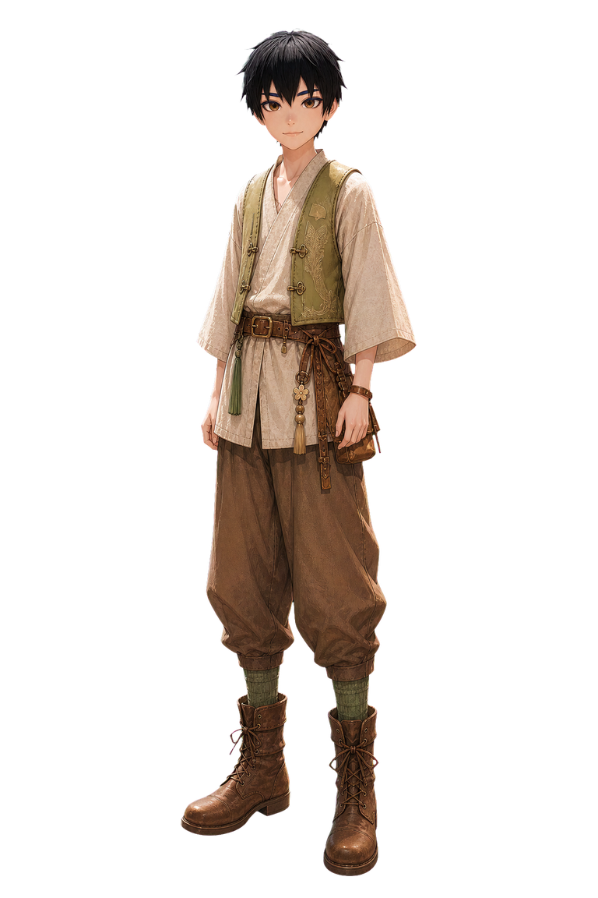

Ryo event participant overlay preview
Path:
/art/characters/defaults/ryo/overlays/event-participant/neutral-body.png

White background
Dark background
Event-like background
Path:
/art/characters/defaults/ryo/overlays/event-participant/neutral-body.png
